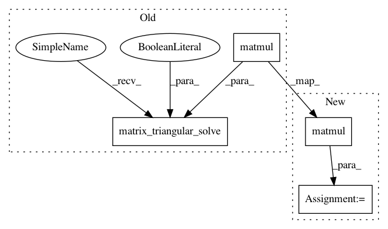

b9d42d6154f5f98696a67097cc93dac027398d76,GPflow/sgpr.py,SGPR,build_predict,#SGPR#,73
Before Change
A = tf.matrix_triangular_solve(L, Kuf, lower=True)*tf.sqrt(1./self.likelihood.variance)
B = tf.matmul(A, tf.transpose(A)) + eye(num_inducing)
LB = tf.cholesky(B)
c = tf.matrix_triangular_solve(LB, tf.matmul(A, err), lower=True) * tf.sqrt(1./self.likelihood.variance)
tmp1 = tf.matrix_triangular_solve(L, Kus, lower=True)
tmp2 = tf.matrix_triangular_solve(LB, tmp1, lower=True)
mean = tf.matmul(tf.transpose(tmp2), c)
After Change
A = tf.matrix_triangular_solve(L, Kuf, lower=True) / sigma
B = tf.matmul(A, tf.transpose(A)) + eye(num_inducing)
LB = tf.cholesky(B)
Aerr = tf.matmul(A, err)
c = tf.matrix_triangular_solve(LB, Aerr, lower=True) / sigma
tmp1 = tf.matrix_triangular_solve(L, Kus, lower=True)
tmp2 = tf.matrix_triangular_solve(LB, tmp1, lower=True)
mean = tf.matmul(tf.transpose(tmp2), c)
In pattern: SUPERPATTERN
Frequency: 3
Non-data size: 4
Instances
Project Name: GPflow/GPflow
Commit Name: b9d42d6154f5f98696a67097cc93dac027398d76
Time: 2016-04-13
Author: james.hensman@gmail.com
File Name: GPflow/sgpr.py
Class Name: SGPR
Method Name: build_predict
Project Name: GPflow/GPflow
Commit Name: b9d42d6154f5f98696a67097cc93dac027398d76
Time: 2016-04-13
Author: james.hensman@gmail.com
File Name: GPflow/sgpr.py
Class Name: SGPR
Method Name: build_predict
Project Name: GPflow/GPflow
Commit Name: b9d42d6154f5f98696a67097cc93dac027398d76
Time: 2016-04-13
Author: james.hensman@gmail.com
File Name: GPflow/sgpr.py
Class Name: SGPR
Method Name: build_likelihood
Project Name: GPflow/GPflow
Commit Name: 8d9d4599a79f86f53117bbe6b3aa17a91b15f98f
Time: 2016-04-13
Author: james.hensman@gmail.com
File Name: GPflow/sgpr.py
Class Name: GPRFITC
Method Name: build_common_terms